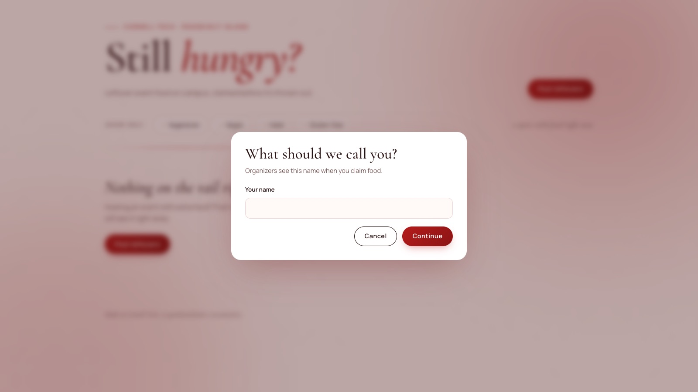

Case study 04 · Product
Second ServingCampus Food Waste Platform
A deployed web app where event organizers post leftover food and students claim a portion before it’s thrown out, instrumented with 13 user events that feed funnel, retention, and A/B test dashboards.
Problem
Campus events at Cornell Tech often end with extra food that gets thrown away, while students nearby would happily eat it. Organizers have no quick way to tell people food is available, and students have no reliable place to check.
[ADD: what you learned in interviews, with real quotes or numbers]Users
Organizers
Student clubs, program staff, and anyone hosting an event with food. They need to get rid of leftovers in under a minute, without extra work.
Students
Anyone on campus. They need to know what food is available, where, and for how long, before walking over.
My role
I own the product end to end: I wrote the PRD, OKRs and metric definitions, designed and built the site, and set up the event tracking, data warehouse, and dashboards.
[ADD: teammates, if any]Process
Research
I wrote an interview guide for organizers and students and a usability test plan built around realistic tasks, such as posting 15 leftover sandwiches from an event.
[ADD: interview and usability findings once you have them]Competitive landscape
- Too Good To Go: a polished app with restaurant supply, but paid and for businesses, not campus events.
- Group chats and Slack: already where students are, but messages get buried and there are no portion counts or timing.
Requirements
I prioritized the core loop first (P0): organizers post food with a location, portions, and a time window; students see active posts sorted by time left and claim a portion, with counts updating for everyone; and every key action is tracked. Dietary filters and the A/B test came next (P1), with notifications and organizer sign-in after that (P2).
Instrumentation: 13 events
- Browsing: page_view, post_viewed, filter_changed, load_failed
- Claiming: claim_clicked, claim_completed, claim_failed, claim_abandoned, signup_completed
- Posting: post_form_opened, post_created, post_form_cancelled, post_failed
Every event also records the user, session, experiment arm, and page. A daily pipeline models the raw events into a star schema with dbt and marts for the claim funnel, retention, and the weekly north star, with data tests such as making sure posts are never over-claimed.
Iterations
[ADD: how the design changed, and why]Key design decisions
Website first, not a mobile app
Faster to ship and test, and hosted free on Vercel. A native app and a Slack bot were the alternatives.
A name, not an account
Version 1 asks only for a name the first time you claim, the lowest-friction path to a first claim. Cornell sign-in was considered; it is the planned fix for spam posts.
Sort by time left, show live portion counts
Students see what’s about to disappear first, and counts update for everyone so nobody walks over for food that’s already gone.
Meals saved per week as the north star
It measures the actual goal, food that gets eaten, rather than traffic. Rescue rate, the claim funnel, and retention sit underneath it.
A/B test on the claim button
“Claim a portion” versus “Save me one,” split 50/50 and fixed per user. The hypothesis is that personal, low-commitment wording raises the view-to-click rate; the guardrail is that click-to-complete must not drop.
[ADD: result once the test finishes: rates, p-value, decision]Final design


Outcome and what I learned
Second Serving is live at second-serving-app.vercel.app (opens in a new tab), with tracking and a daily data pipeline running.
Next steps already identified: Cornell sign-in to stop spam posts, a single database transaction so two people can’t claim the last portion at once, and email or Slack notifications so students don’t have to check the site.
[ADD: real usage numbers, only once you have them] [ADD: what you learned]